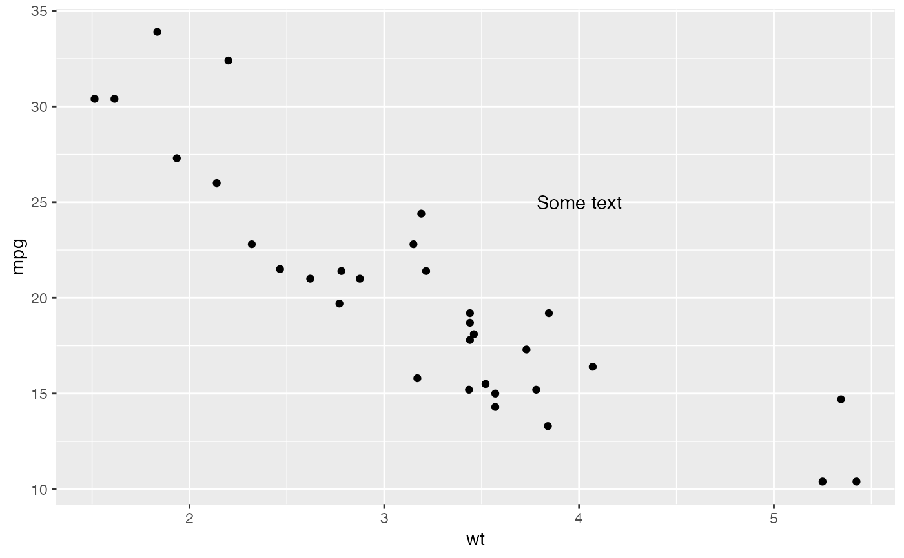
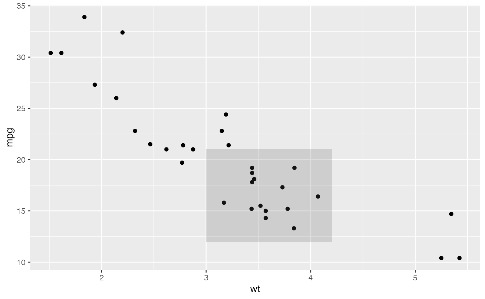
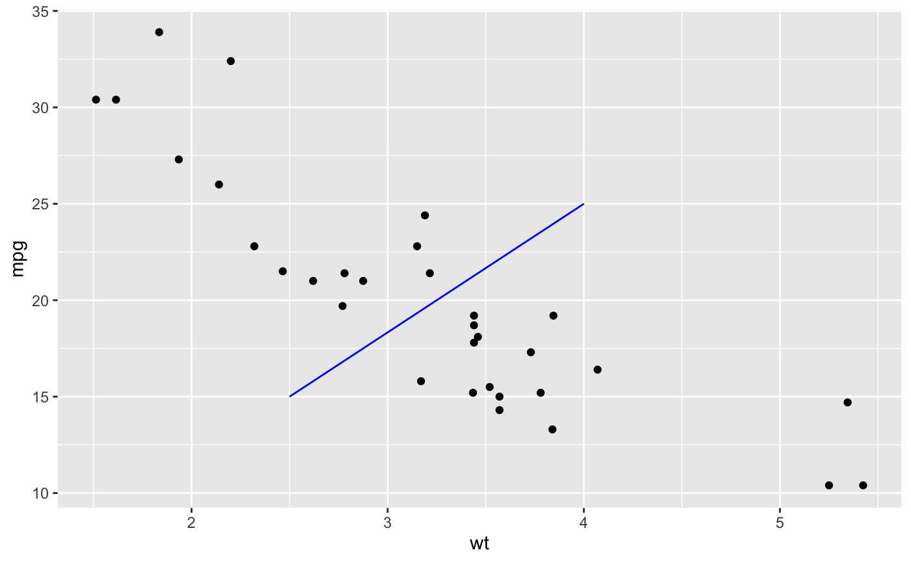
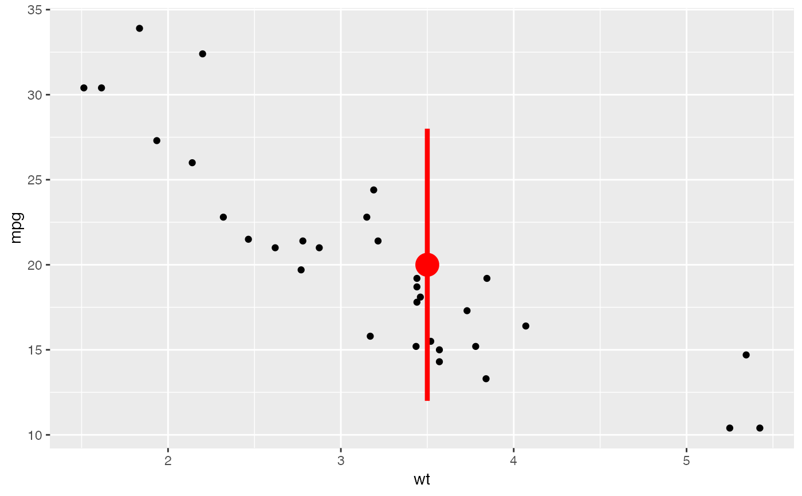
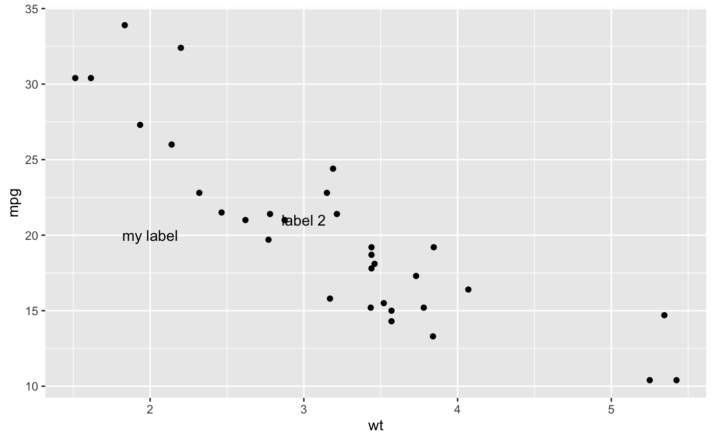
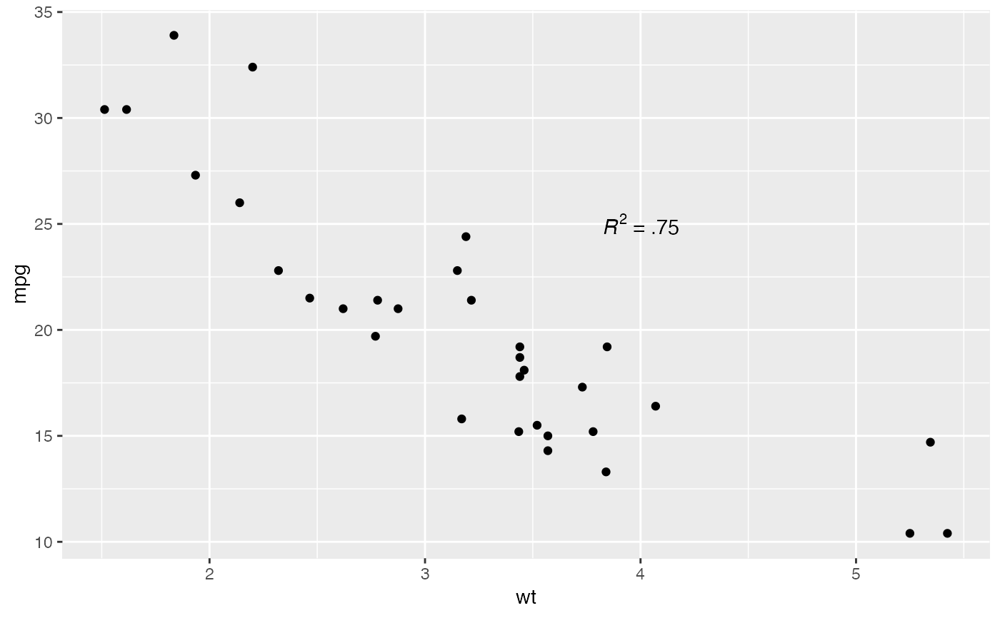

This function adds geoms to a plot, but unlike typical a geom function, the properties of the geoms are not mapped from variables of a data frame, but are instead passed in as vectors. This is useful for adding small annotations (such as text labels) or if you have your data in vectors, and for some reason don't want to put them in a data frame.
annotate( geom, x = NULL, y = NULL, xmin = NULL, xmax = NULL, ymin = NULL, ymax = NULL, xend = NULL, yend = NULL, ..., na.rm = FALSE )
Arguments
| geom | name of geom to use for annotation |
|---|---|
| x, y, xmin, ymin, xmax, ymax, xend, yend | positioning aesthetics - you must specify at least one of these. |
| ... | Other arguments passed on to |
| na.rm | If |
Details
Note that all position aesthetics are scaled (i.e. they will expand the limits of the plot so they are visible), but all other aesthetics are set. This means that layers created with this function will never affect the legend.
Examples
p <- ggplot(mtcars, aes(x = wt, y = mpg)) + geom_point() p + annotate("text", x = 4, y = 25, label = "Some text")p + annotate("text", x = 2:5, y = 25, label = "Some text")p + annotate("rect", xmin = 3, xmax = 4.2, ymin = 12, ymax = 21, alpha = .2)p + annotate("segment", x = 2.5, xend = 4, y = 15, yend = 25, colour = "blue")p + annotate("pointrange", x = 3.5, y = 20, ymin = 12, ymax = 28, colour = "red", size = 1.5)p + annotate("text", x = 4, y = 25, label = "italic(R) ^ 2 == 0.75", parse = TRUE)p + annotate("text", x = 4, y = 25, label = "paste(italic(R) ^ 2, \" = .75\")", parse = TRUE)